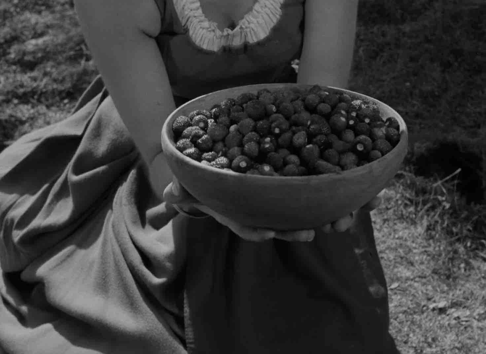

<nav class="navigation">  
<ul>  
    <li><a href="/"> Home </a></li>  
    <li><a href="/cv/"> CV </a></li>
    <li><a href="/blog/"> Blog </a></li>
    <li><a href="/projects/"> Projects </a></li>
    <li><a href="/photos/"> Photos </a></li>
    <li><a href="https://showtimes.nathanstefanik.xyz"> Showtimes </a></li>
</ul>  
</nav> 
<head>
    <meta http-equiv="Content-Security-Policy" content="default-src 'self'; img-src 'self' https: data:; frame-src 'self'; base-uri 'self';">

<link rel="stylesheet" type="text/css" href="../pagestyle.css">
</head> 

<h1>Strawberries in "The Seventh Seal" by Ingmar Bergman</h1>



<p>
Look at these strawberries.
</p>
